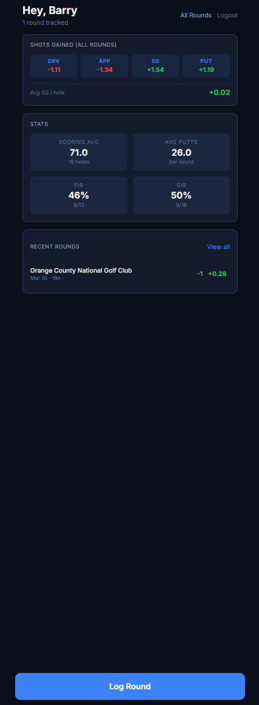
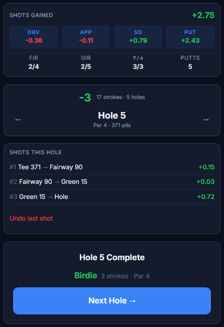
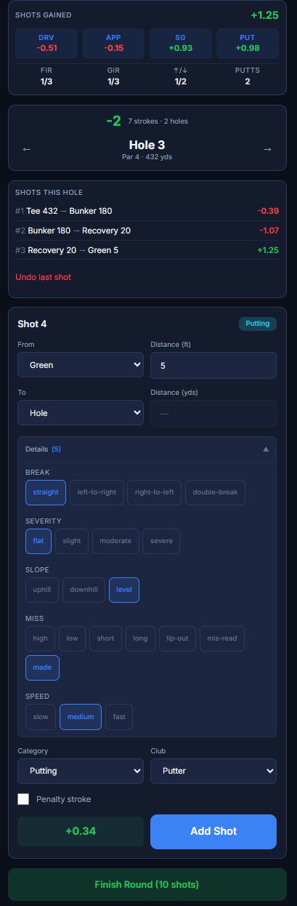
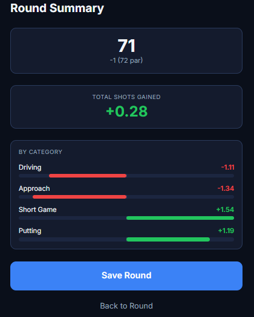
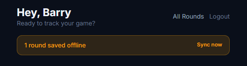

A mobile-first PWA for tracking golf strokes gained in real-time on the course. Log shots hole-by-hole, get instant SG feedback against PGA Tour benchmarks, and view cumulative performance by category — Driving, Approach, Short Game, and Putting. Works offline with automatic sync.
View on GitHubThe home screen gives you a snapshot of your game at a glance — aggregate strokes gained broken out by category, key stats like scoring average, fairways in regulation, and greens in regulation, plus a list of recent rounds with their scores and total SG.

The core flow: tap through each shot from tee to green. After every shot, the app instantly calculates strokes gained against PGA Tour benchmarks so you know exactly where you're gaining or losing strokes — before you even walk to your next shot.


Here's a full walkthrough of entering shots on a hole — from tee to green — with real-time SG calculations updating after each shot.
The form is designed to minimize taps on the course. Instead of manually filling every field, the app infers context from the previous shot and the current situation — so most of the time you're confirming defaults, not typing.
const inferCategory = ( surface: Surface, distance: number, par: number, shotNumber: number ): Category => { if (surface === 'Green') return 'Putting' if (surface === 'Tee' && par >= 4) return 'Driving' if (distance <= 50) return 'Short Game' return 'Approach' }
const suggestClub = ( surface: Surface, distance: number ): string => { if (surface === 'Green') return 'Putter' if (surface === 'Tee' && distance > 250) return 'Driver' if (distance > 200) return '3 Wood' if (distance > 180) return '4 Iron' if (distance > 160) return '6 Iron' if (distance > 140) return '7 Iron' if (distance > 120) return '8 Iron' if (distance > 100) return '9 Iron' if (distance > 80) return 'PW' if (distance > 50) return 'GW' return 'SW' }
Each shot is evaluated instantly against PGA Tour benchmarks. The formula compares your starting position's expected strokes-to-hole against your result — positive means you gained on the field, negative means you lost.
export const calculateStrokesGained = ( startSurface: Surface, startDistance: number, endSurface: Surface, endDistance: number, penalty: boolean, benchmarks: Benchmark[] ): number => { const startAvg = lookupBenchmark(startSurface, startDistance, benchmarks) const endAvg = endSurface === 'Hole' ? 0 : lookupBenchmark(endSurface, endDistance, benchmarks) let sg = startAvg - (1 + endAvg) if (penalty) sg -= 1 return Math.round(sg * 1000) / 1000 }
The calculator is shared between client and server — the same module runs in the browser for instant feedback and on the backend for verified persistence.
After completing a round, the summary breaks down strokes gained by category with a diverging bar chart — green bars for shots gained, red for shots lost. One tap saves the round to the database or queues it for offline sync.

Designed for the golf course — spotty cell service is expected. PGA Tour benchmarks are cached in IndexedDB on first load, enabling full SG calculations without connectivity. Completed rounds queue locally and auto-sync when back online.

export const cacheBenchmarks = async (benchmarks: Benchmark[]) => { await set('benchmarks', benchmarks) } export const getCachedBenchmarks = async (): Promise<Benchmark[] | undefined> => { return await get('benchmarks') } export const savePendingRound = async (round: PendingRound) => { const pending = (await get('pendingRounds')) || [] pending.push({ ...round, id: crypto.randomUUID() }) await set('pendingRounds', pending) }
Azure SQL with a dimensional model — dimension tables for players, courses, and hole configurations, fact tables for individual shots and per-hole score rollups.
CREATE TABLE DimCourse ( CourseID INT IDENTITY PRIMARY KEY, ClubName NVARCHAR(255) NOT NULL, CourseName NVARCHAR(255), APISourceID NVARCHAR(100) ); CREATE TABLE FactShots ( ShotID INT IDENTITY PRIMARY KEY, PlayerID INT REFERENCES DimPlayer, RoundID INT REFERENCES DimRound, Hole INT, Category NVARCHAR(20), -- Driving | Approach | Short Game | Putting SurfaceStart NVARCHAR(20), DistanceStart INT, SurfaceEnd NVARCHAR(20), DistanceEnd INT, ClubUsed NVARCHAR(30), StrokesGained DECIMAL(6,3) ); CREATE TABLE FactHoleScores ( RoundID INT REFERENCES DimRound, Hole INT, Score INT, GreenInReg BIT, Putts INT, SG_Driving DECIMAL(6,3), SG_Approach DECIMAL(6,3), SG_Short DECIMAL(6,3), SG_Putting DECIMAL(6,3), PRIMARY KEY (RoundID, Hole) );